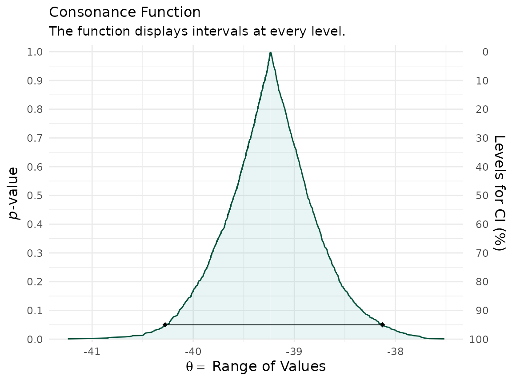
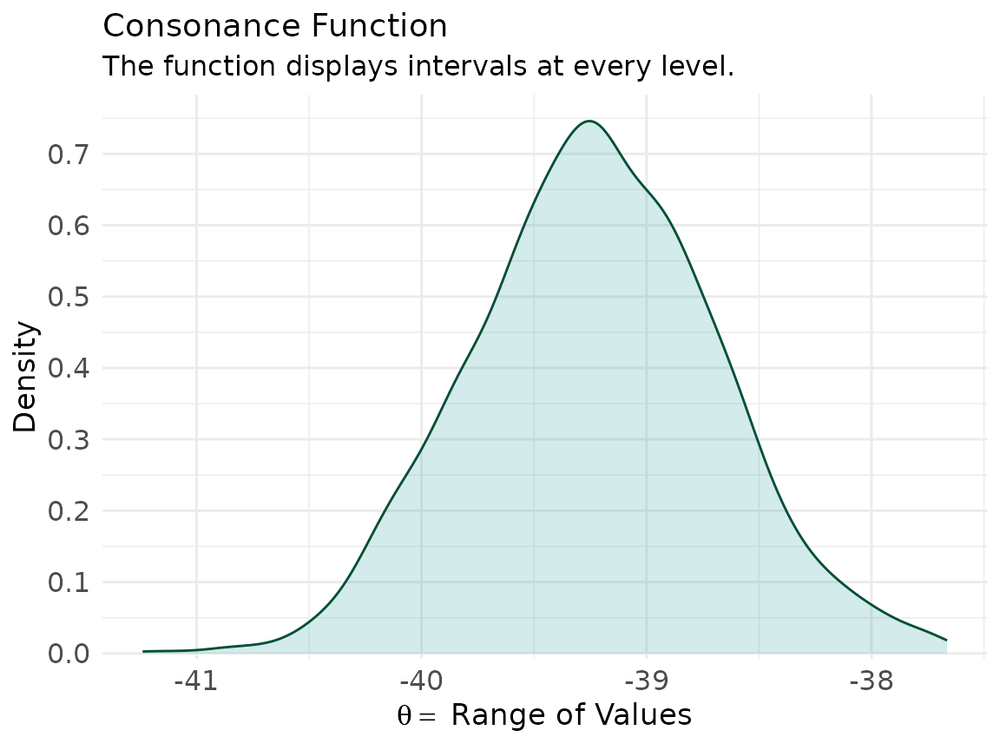
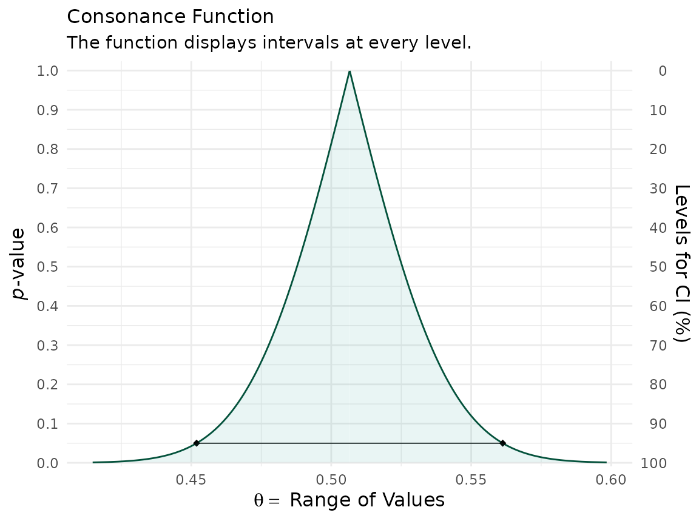

knitr::opts_chunk$set(
echo = TRUE,
message = TRUE,
warning = TRUE,
collapse = TRUE
)
library(concurve)## Please see the documentation on https://data.lesslikely.com/concurve/ or by typing `help(concurve)`Some authors have shown that the bootstrap distribution is equal to the confidence distribution because it meets the definition of a consonance distribution.(Efron 1998; Efron and Narasimhan 2018; Xie and Singh 2013) The bootstrap distribution and the asymptotic consonance distribution would be defined as:
Certain bootstrap methods such as the BCa method and
t-bootstrap method also yield second order accuracy of
consonance distributions.
Here, I demonstrate how to use these particular bootstrap methods to arrive at consonance curves and densities.
We’ll use the Iris dataset and construct a function
that’ll yield a parameter of interest.
The Nonparametric Bootstrap
iris <- datasets::iris
foo <- function(data, indices) {
dt <- data[indices, ]
c(
cor(dt[, 1], dt[, 2], method = "p")
)
}We can now use the curve_boot() method to construct a
function. The default method used for this function is the
“Bca” method provided by the bcaboot
package.(efron2018?)
y <- curve_boot(data = iris, func = foo, method = "bca", replicates = 2000, steps = 1000)
## | | | 0% | | | 1% | |= | 1% | |= | 2% | |== | 2% | |== | 3% | |== | 4% | |=== | 4% | |=== | 5% | |==== | 5% | |==== | 6% | |===== | 6% | |===== | 7% | |===== | 8% | |====== | 8% | |====== | 9% | |======= | 9% | |======= | 10% | |======= | 11% | |======== | 11% | |======== | 12% | |========= | 12% | |========= | 13% | |========= | 14% | |========== | 14% | |========== | 15% | |=========== | 15% | |=========== | 16% | |============ | 16% | |============ | 17% | |============ | 18% | |============= | 18% | |============= | 19% | |============== | 19% | |============== | 20% | |============== | 21% | |=============== | 21% | |=============== | 22% | |================ | 22% | |================ | 23% | |================ | 24% | |================= | 24% | |================= | 25% | |================== | 25% | |================== | 26% | |=================== | 26% | |=================== | 27% | |=================== | 28% | |==================== | 28% | |==================== | 29% | |===================== | 29% | |===================== | 30% | |===================== | 31% | |====================== | 31% | |====================== | 32% | |======================= | 32% | |======================= | 33% | |======================= | 34% | |======================== | 34% | |======================== | 35% | |========================= | 35% | |========================= | 36% | |========================== | 36% | |========================== | 37% | |========================== | 38% | |=========================== | 38% | |=========================== | 39% | |============================ | 39% | |============================ | 40% | |============================ | 41% | |============================= | 41% | |============================= | 42% | |============================== | 42% | |============================== | 43% | |============================== | 44% | |=============================== | 44% | |=============================== | 45% | |================================ | 45% | |================================ | 46% | |================================= | 46% | |================================= | 47% | |================================= | 48% | |================================== | 48% | |================================== | 49% | |=================================== | 49% | |=================================== | 50% | |=================================== | 51% | |==================================== | 51% | |==================================== | 52% | |===================================== | 52% | |===================================== | 53% | |===================================== | 54% | |====================================== | 54% | |====================================== | 55% | |======================================= | 55% | |======================================= | 56% | |======================================== | 56% | |======================================== | 57% | |======================================== | 58% | |========================================= | 58% | |========================================= | 59% | |========================================== | 59% | |========================================== | 60% | |========================================== | 61% | |=========================================== | 61% | |=========================================== | 62% | |============================================ | 62% | |============================================ | 63% | |============================================ | 64% | |============================================= | 64% | |============================================= | 65% | |============================================== | 65% | |============================================== | 66% | |=============================================== | 66% | |=============================================== | 67% | |=============================================== | 68% | |================================================ | 68% | |================================================ | 69% | |================================================= | 69% | |================================================= | 70% | |================================================= | 71% | |================================================== | 71% | |================================================== | 72% | |=================================================== | 72% | |=================================================== | 73% | |=================================================== | 74% | |==================================================== | 74% | |==================================================== | 75% | |===================================================== | 75% | |===================================================== | 76% | |====================================================== | 76% | |====================================================== | 77% | |====================================================== | 78% | |======================================================= | 78% | |======================================================= | 79% | |======================================================== | 79% | |======================================================== | 80% | |======================================================== | 81% | |========================================================= | 81% | |========================================================= | 82% | |========================================================== | 82% | |========================================================== | 83% | |========================================================== | 84% | |=========================================================== | 84% | |=========================================================== | 85% | |============================================================ | 85% | |============================================================ | 86% | |============================================================= | 86% | |============================================================= | 87% | |============================================================= | 88% | |============================================================== | 88% | |============================================================== | 89% | |=============================================================== | 89% | |=============================================================== | 90% | |=============================================================== | 91% | |================================================================ | 91% | |================================================================ | 92% | |================================================================= | 92% | |================================================================= | 93% | |================================================================= | 94% | |================================================================== | 94% | |================================================================== | 95% | |=================================================================== | 95% | |=================================================================== | 96% | |==================================================================== | 96% | |==================================================================== | 97% | |==================================================================== | 98% | |===================================================================== | 98% | |===================================================================== | 99% | |======================================================================| 99% | |======================================================================| 100%I will suppress the output of the function because it is unnecessarily long. But we’ve placed all the estimates into a list object called y.
The first item in the list will be the consonance distribution constructed by typical means, while the third item will be the bootstrap approximation to the consonance distribution.
ggcurve(data = y[[1]], nullvalue = TRUE)
## Warning: Using `size` aesthetic for lines was deprecated in ggplot2 3.4.0.
## ℹ Please use `linewidth` instead.
## ℹ The deprecated feature was likely used in the concurve package.
## Please report the issue at <https://github.com/zadrafi/concurve/issues>.
## This warning is displayed once per session.
## Call `lifecycle::last_lifecycle_warnings()` to see where this warning was
## generated.
ggcurve(data = y[[3]], nullvalue = TRUE)
We can also print out a table for TeX documents
(gg <- curve_table(data = y[[1]], format = "image"))Lower Limit |
Upper Limit |
Interval Width |
Interval Level (%) |
CDF |
P-value |
S-value (bits) |
|---|---|---|---|---|---|---|
-0.142 |
-0.094 |
0.048 |
25 |
0.625 |
0.75 |
0.415 |
-0.168 |
-0.067 |
0.101 |
50 |
0.750 |
0.50 |
1.000 |
-0.204 |
-0.031 |
0.173 |
75 |
0.875 |
0.25 |
2.000 |
-0.214 |
-0.021 |
0.193 |
80 |
0.900 |
0.20 |
2.322 |
-0.265 |
0.030 |
0.295 |
95 |
0.975 |
0.05 |
4.322 |
-0.311 |
0.076 |
0.387 |
99 |
0.995 |
0.01 |
6.644 |
More bootstrap replications will lead to a smoother function. But for now, we can compare these two functions to see how similar they are.
If we wanted to look at the bootstrap standard errors, we could do so by loading the fifth item in the list
knitr::kable(y[[5]])| theta | sdboot | z0 | a | sdjack | |
|---|---|---|---|---|---|
| est | -0.1175698 | 0.0751695 | 0.0062666 | 0.0304863 | 0.075694 |
| jsd | 0.0000000 | 0.0011226 | 0.0285413 | 0.0000000 | 0.000000 |
where in the top row, theta is the point estimate, and
sdboot is the bootstrap estimate of the standard error,
sdjack is the jacknife estimate of the standard error.
z0 is the bias correction value and a is the
acceleration constant.
The values in the second row are essentially the internal standard errors of the estimates in the top row.
The densities can also be calculated accurately using the
t-bootstrap method. Here we use a different dataset to show
this
library(Lock5Data)
dataz <- data(CommuteAtlanta)
func <- function(data, index) {
x <- as.numeric(unlist(data[1]))
y <- as.numeric(unlist(data[2]))
return(mean(x[index]) - mean(y[index]))
}Our function is a simple mean difference. This time, we’ll set the
method to “t” for the t-bootstrap method
z <- curve_boot(data = CommuteAtlanta, func = func, method = "t", replicates = 2000, steps = 1000)
## Warning in norm.inter(t, alpha): extreme order statistics used as endpoints
ggcurve(data = z[[1]], nullvalue = FALSE)
ggcurve(data = z[["Intervals Density"]], type = "cd", nullvalue = FALSE)
The consonance curve and density are nearly identical. With more bootstrap replications, they are very likely to converge.
(zz <- curve_table(data = z[[1]], format = "image"))Lower Limit |
Upper Limit |
Interval Width |
Interval Level (%) |
CDF |
P-value |
S-value (bits) |
|---|---|---|---|---|---|---|
-39.395 |
-39.060 |
0.335 |
25.0 |
0.625 |
0.750 |
0.415 |
-39.594 |
-38.872 |
0.722 |
50.0 |
0.750 |
0.500 |
1.000 |
-39.864 |
-38.608 |
1.255 |
75.0 |
0.875 |
0.250 |
2.000 |
-39.948 |
-38.552 |
1.396 |
80.0 |
0.900 |
0.200 |
2.322 |
-40.020 |
-38.454 |
1.566 |
85.0 |
0.925 |
0.150 |
2.737 |
-40.136 |
-38.330 |
1.806 |
90.0 |
0.950 |
0.100 |
3.322 |
-40.278 |
-38.128 |
2.149 |
95.0 |
0.975 |
0.050 |
4.322 |
-40.410 |
-37.958 |
2.452 |
97.5 |
0.988 |
0.025 |
5.322 |
-40.618 |
-37.756 |
2.862 |
99.0 |
0.995 |
0.010 |
6.644 |
The Parametric Bootstrap
For the examples above, we mainly used nonparametric bootstrap
methods. Here I show an example using the parametric Bca
bootstrap and the results it yields.
First, we’ll load our data again and set our function.
data(diabetes, package = "bcaboot")
X <- diabetes$x
y <- scale(diabetes$y, center = TRUE, scale = FALSE)
lm.model <- lm(y ~ X - 1)
mu.hat <- lm.model$fitted.values
sigma.hat <- stats::sd(lm.model$residuals)
t0 <- summary(lm.model)$adj.r.squared
y.star <- sapply(mu.hat, rnorm, n = 1000, sd = sigma.hat)
tt <- apply(y.star, 1, function(y) summary(lm(y ~ X - 1))$adj.r.squared)
b.star <- y.star %*% XNow, we’ll use the same function, but set the method to
“bcapar” for the parametric method.
df <- curve_boot(method = "bcapar", t0 = t0, tt = tt, bb = b.star)Now we can look at our outputs.
``` r
ggcurve(df[[1]], nullvalue = FALSE)
ggcurve(df[[3]], nullvalue = FALSE)We can compare the functions to see how well the bootstrap approximations match up
That concludes our demonstration of the bootstrap method to approximate consonance functions.
Cite R Packages
Please remember to cite the packages that you use.
citation("concurve")
## To cite package 'concurve' in publications use:
##
## Rafi Z, Vigotsky A (2026). _concurve: Computes and Plots
## Compatibility (Confidence) Intervals, P-Values, S-Values, &
## Likelihood Intervals to Form Consonance, Surprisal, & Likelihood
## Functions_. R package version 3.0.0,
## <https://CRAN.R-project.org/package=concurve>.
##
## Rafi Z, Greenland S (2020). "Semantic and Cognitive Tools to Aid
## Statistical Science: Replace Confidence and Significance by
## Compatibility and Surprise." _BMC Medical Research Methodology_,
## *20*, 244. ISSN 1471-2288. doi:10.1186/s12874-020-01105-9
## <https://doi.org/10.1186/s12874-020-01105-9>.
## <https://doi.org/10.1186/s12874-020-01105-9>.
##
## To see these entries in BibTeX format, use 'print(<citation>,
## bibtex=TRUE)', 'toBibtex(.)', or set
## 'options(citation.bibtex.max=999)'.
citation("boot")
## To cite package 'boot' in publications use:
##
## Canty A, Ripley B (2025). _boot: Bootstrap Functions_.
## doi:10.32614/CRAN.package.boot
## <https://doi.org/10.32614/CRAN.package.boot>. R package version
## 1.3-32, <https://CRAN.R-project.org/package=boot>.
##
## Davison A, Hinkley D (1997). _Bootstrap Methods and Their
## Applications_. Cambridge University Press, Cambridge. ISBN
## 0-521-57391-2. doi:10.1017/CBO9780511802843
## <https://doi.org/10.1017/CBO9780511802843>.
##
## To see these entries in BibTeX format, use 'print(<citation>,
## bibtex=TRUE)', 'toBibtex(.)', or set
## 'options(citation.bibtex.max=999)'.
citation("bcaboot")
## To cite package 'bcaboot' in publications use:
##
## Efron B, Narasimhan B (2021). _bcaboot: Bias Corrected Bootstrap
## Confidence Intervals_. doi:10.32614/CRAN.package.bcaboot
## <https://doi.org/10.32614/CRAN.package.bcaboot>. R package version
## 0.2-3, <https://CRAN.R-project.org/package=bcaboot>.
##
## A BibTeX entry for LaTeX users is
##
## @Manual{,
## title = {bcaboot: Bias Corrected Bootstrap Confidence Intervals},
## author = {Bradley Efron and Balasubramanian Narasimhan},
## year = {2021},
## note = {R package version 0.2-3},
## url = {https://CRAN.R-project.org/package=bcaboot},
## doi = {10.32614/CRAN.package.bcaboot},
## }